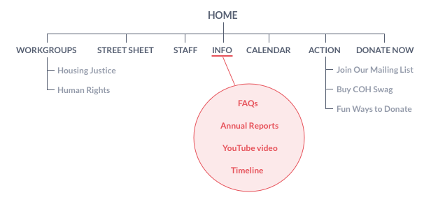

Founded in 1987, the Coalition on Homelessness is an organization of community activists aimed at finding and addressing the root causes of homelessness and poverty in San Francisco.
The organization approached me wanting to more clearly articulate their impact and mission. They wanted a website design that better showcases their organization, is easier to navigate, is visually appealing, and is a means of generating greater revenue through donations.
Project completed March 2017.
Information Architecture

The first problem I tackled with this project was restructuring the website's navigation. Information on the site was disorganized and often left participants scratching their heads during user testing. For example, the site's Info page contained a hodge podge of FAQs, annual reports, a promotional video, and a lengthy, text-only timeline of the organization's 26 year history.
Based on feedback from users, I reorganized the navigation into 3 categories: who the organization is (Who We Are), what services they offer (What We Do), and how donors, funders, and volunteers can take action (Get Involved).

Ideation
With the information architecture hashed out, I moved onto sketching and wireframing. My process usually begins with sketching by hand as many ideas as possible. After I settle on something I like, I create block-level diagrams and greyscale wireframes to help facilitate meetings with clients.

Logo & Branding
The organization already had a logo that they wanted to keep, so I cleaned it up a bit and turned it into a vector image. Working with stakeholders, I developed a more modern and professional color scheme that worked with their preference for purple, red, and blue.
The color red was used throughout the site to highlight important call to action items and the butterfly - the organization's symbol for hope.

Final Design - Landing Page
After using wireframes and style guides to gather input from the client, I consolidated their feedback and used it to help me create high fidelity mockups. After a few more iterations, I had the finalized visual design. And most importantly, a happy client!